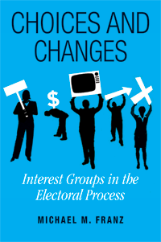

<body bgcolor="#FFFFFF" text="#000000" link="#0000FF" vlink="#CC0000" alink="#CC0000"><center><hr width="350" size="1" align="center" noshade>The most comprehensive book about interest groups in recent American politics<hr width="350" size="1" align="center" noshade><p><a href="https://cdcshoppingcart.uchicago.edu/Cart/ChicagoBook.aspx?ISBN=9781592136735&&PRESS=temple" target="_top">Buy this book!</a> | <a href="https://cdcshoppingcart.uchicago.edu/Cart/Cart.aspx?PRESS=temple" target="_top">View Cart</a> | <a href="https://cdcshoppingcart.uchicago.edu/Cart/Cart.aspx?PRESS=temple" target="_top">Check Out</a></p><p></p></center><!--none//--><h1>Choices and Changes</h1>
<H2>Interest Groups in the Electoral Process</H2>
<h3>Michael M. Franz</h3>
<P>cloth 1592136737 $80.50, Mar 08, <FONT COLOR=#990033>Available</FONT>
<br>paper 1592136745 $27.95, Mar 08, <FONT COLOR=#990033>Available</FONT>
<br>Electronic Book 1592136753 $27.95 <FONT COLOR=#990033>Available</FONT>
<BR> 240 pp
5.5x8.25
22&nbsp;tables 19&nbsp;figures 11&nbsp;halftones
</P><BLOCKQUOTE><I>"An excellent book, theoretically rich and empirically sound. </i>Choices and Changes<i> is interesting, understandable, and informative. Franz’s overall analysis is the most thorough of any book that I have read in the interest group literature. His extensive data analysis fills a major gap in the literature."</I>
<br>&#151<b>Peter L. Francia</b>, East Carolina University, author of <I>The Future of Organized Labor in American Politics</I><I></I></BLOCKQUOTE>
<p><i>Choices and Changes</i> is the most comprehensive examination to date of the impact of interest groups on recent American electoral politics. Richly informed, theoretically and empirically, it is the first book to explain the emergence of aggressive interest group electioneering tactics in the mid-1990s—including “soft money” contributions, issue ads, and “527s” (IRS-classified political organizations).
<p>Michael Franz argues that changing political and legal contexts have clearly influenced the behavior of interest groups. To support his argument, he tracks in detail the evolution of campaign finance laws since the 1970s, examines all soft money contributions—nearly $1 billion in total—to parties by interest groups from 1991-2002, and analyzes political action committee (PAC) contributions to candidates and parties from 1983-2002. He also draws on his own interviews with campaign finance leaders.
<p>Based on this rigorous data analysis and a formidable knowledge of its subject, <i>Choices and Changes</i> substantially advances our understanding of the significance of interest groups in U.S. politics.
<BR>&nbsp;<h2>Excerpt</h2><P>Excerpt available at <a href="http://www.temple.edu/tempress">www.temple.edu/tempress</a></p>
<BR>&nbsp;<h2>Reviews</h2>
<p><i>"If you ever doubt the vitality of America's democracy, just look at the magnificent welter of interest groups that reach into every nook and cranny of the country. Michael Franz understands this, and clearly realizes how influential these groups are. They involve millions of people, and spend tens of millions of dollars on candidates and campaigns. Moreover, they represent the diversity of the nation-yet also contain the potential for corruption. Franz covers all the possibilities, and he enlightens us with detailed and original research. Once you've read </i>Choices and Changes<i>, you will be better prepared to understand how politics actually works."</i>
<br>&#151<b>Larry J. Sabato</b>, author of <i>A More Perfect Constitution</i> and Director of the University of Virginia Center for Politics
<p><i>"Rich in detail and substantive implications, this book is a terrific contribution to the literature on interests groups and the electoral process. Franz clearly lays out the importance of partisan and regulatory context in explaining the strategies of interest group leaders when they choose whom to fund in campaigns. This is valuable reading for scholars and for all those interested in campaign finance reform."</i>
<br>&#151<b>Ken Kollman</b>, Professor of Political Science, University of Michigan
<p><i>"Academics are the primary audience for this graph-rich book, but dedicated (and patient) journalists and Hill staffers may also pick up some useful data points."</i>
<br>&#151<b><i>Campaigns and Elections</i></b>
<p><i>"While the volume represents a well-crafted, theoretically based piece of social science research of use to academic specialists interested in campaign finance, other readers concerned about the impact of money on American politics generally will find the material not overly technical, and very readable and informative....Perhaps Franz' most original contribution to the literature is found in his analysis of how the changing regulatory environment affected a group's choice of electioneering tactics."</i>
<br>&#151<b><i>Political Science Quarterly</i></b>
<BR>&nbsp;<h2>Contents</h2><P>
<BR> Acknowledgements
<BR>1. The Puzzle of Interest Group Electioneering
<BR>2. Election Law and Electoral Politics Between FECA and BCRA
<BR>3. A Theory of Emergent and Changing Interest Group Tactics
<BR>4. Putting PACs in (Political) Context(s)
<BR>5. Understanding Soft Money
<BR>6. Following 527s and Watching Issue Advocacy
<BR>7. Tracking the Regulatory Context
<BR>8. Conclusion
<BR>Appendix PAC Ideology Measure
<BR>Notes
<BR>Bibliography
<BR>Index
</P><BR>&nbsp;<H2>About the Author(s)</H2>
<table><tr><td valign="top"><img src="/tempress/authors/1921_au.gif" height="90" width="75"></td><td width="100%" valign="middle"><p><b>Michael M. Franz</b> is Assistant Professor of Government and Legal Studies at Bowdoin College. His research interests include political advertising, interest groups politics, campaign finance reform, and mass media. He has published articles in <i>The American Journal of Political Science, Political Communication, Political Analysis, Political Behavior,</i> and <i>The Journal of Politics.</i> In 2007, he was awarded the American Political Science Association's E.E. Schattschneider Award for the best doctoral dissertation in the field of American government. He is also the co-author of <i><a href="1922_reg.html" target="_top">Campaign Advertising and American Democracy</a></i> (Temple).</P></td></tr></table>
<BR><H2>Subject Categories</H2>
<p><A HREF="/tempress/political.html" TARGET="_top">Political Science and Public Policy</a>
<BR><A HREF="/tempress/american.html" TARGET="_top">American Studies</a>
</p>
<p align="center"><a href="https://cdcshoppingcart.uchicago.edu/Cart/ChicagoBook.aspx?ISBN=9781592136735&&PRESS=temple" target="_top">Buy this book!</a> | <a href="https://cdcshoppingcart.uchicago.edu/Cart/Cart.aspx?PRESS=temple" target="_top">View Cart</a> | <a href="https://cdcshoppingcart.uchicago.edu/Cart/Cart.aspx?PRESS=temple" target="_top">Check Out</a></p><p><font face="Arial" size="1"><a href="copyright.html" onMouseOver="window.status='Web Copyright Policy';return true;" onMouseOut="window.status=''" title="Web Copyright Policy">&copy;</a> 2015 <a href="http://www.temple.edu" target="new" onMouseOver="window.status='Link to Temple University home page';return true;" onMouseOut="window.status=''" title="Link to Temple University home page">Temple University</a>. All Rights Reserved. http://www.temple.edu/tempress/titles/1921_reg.html</font></p>